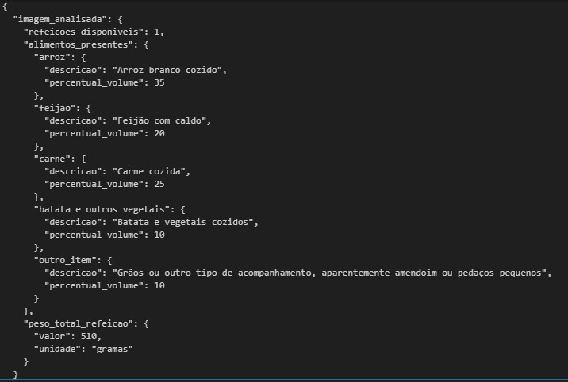

Computer vision · Public sector
Checking public meals from a photo
A computer-vision pipeline that turns one photo and one weight into an auditable nutrition record for every meal.
Adoptedby Fortaleza City Hall for its meal-distribution programs
1 photo + 1 weightis all the field team captures per meal
Every mealgets a structured, queryable record
The problem
The city distributes meals to vulnerable families and needs an objective record that each one contains the required food groups in the right proportions. Checking by hand across thousands of meals doesn't scale, and past batches can't be audited.
How it works
- CaptureA photo of the meal on a calibration scale.
- SegmentA segmentation model splits the plate into food categories.
- MeasureEach category's share of the meal, combined with the scale weight, gives grams per food.
- RecordA structured JSON record per meal, ready for audits and dashboards.
Deterministic codeAI model
Key decisions
- Pair vision with a real scale weight, so the output is grams, not just proportions.
- The pipeline is the system of record for audits, not a one-off model.
- Trained on labeled photos of real regional Brazilian meals.
In the field

Stack
- Python
- PyTorch
- Image segmentation
- OpenCV
My role
Researcher (Computer Vision), Federal University of Ceará, within Ceará's Chief Scientist Program (FUNCAP).